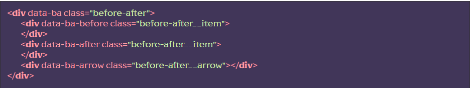
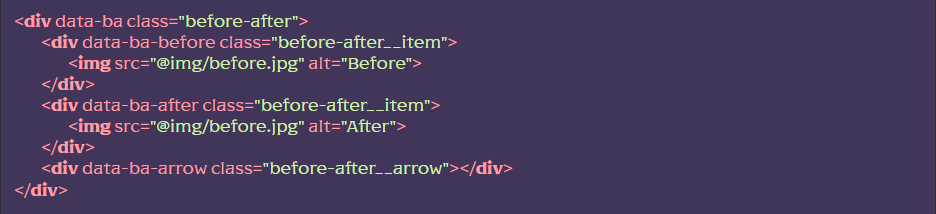
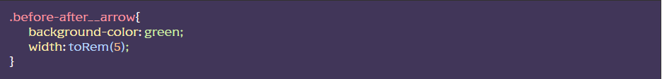

Підключення
[HTML] У потрібному місці викликати сніпет ba (класи можна замінити на потрібні). Або вручну створити структуру із відповідними дата-атрибутами.
[JS] У файлі js/app.js розкоментувати рядок import ‘./libs/beforeafter.js’; Ця ж дія підключить файл стілів scss/base/beforeafter.scss який містить, необхідні для роботи модуля, базові стилі
Використання
За допомогою тегу IMG додайте забраження у відповідні HTML-елементи, додайте необхідну стилізацію для розділяючої лінії
 